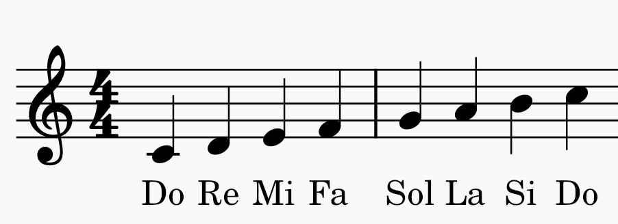
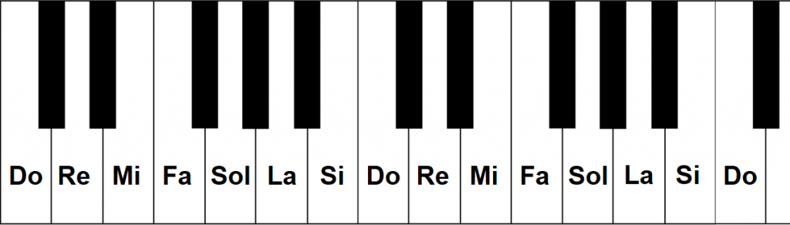
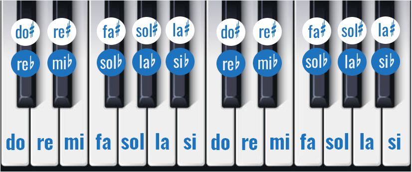

Las notas musicales representan sonidos y permiten escribir, leer e interpretar música de forma universal. Gracias a ellas se pueden crear melodías, ritmos y canciones🎵. Las notas musicales básicas son Do, Re, Mi, Fa, Sol, La y Si. Estas notas se repiten continuamente en diferentes alturas, produciendo sonidos más graves o más agudos.

Las notas naturales son aquellas que no tienen alteraciones como sostenidos o bemoles. En el piano corresponden a las teclas blancas 🎹.

El espacio entre una nota y otra se llama intervalo. La distancia más pequeña es el semitono y dos semitonos forman un tono completo. Por ejemplo, de Mi a Fa hay un semitono, mientras que de Do a Re hay un tono. En el teclado puedes ver la distancia de una nota a otra, si no hay un tecla negra entre ambas notas, hay un semitono de distancia, pero si lo hay, entonces 1 tono de distancia entre ambas notas.

Los sostenidos (#) y bemoles (♭) son alteraciones musicales. El sostenido aumenta medio tono a una nota y el bemol la disminuye medio tono. Generalmente se representan con las teclas negras del piano.
Pulsa una nota para escuchar cómo suena.
Puedes dejar tu opinión, sugerencias o información adicional.
Muy buena explicación, entendí las notas musicales fácilmente.
Me gustó mucho el diseño y las imágenes usadas.
Sería genial agregar ejercicios interactivos más adelante.